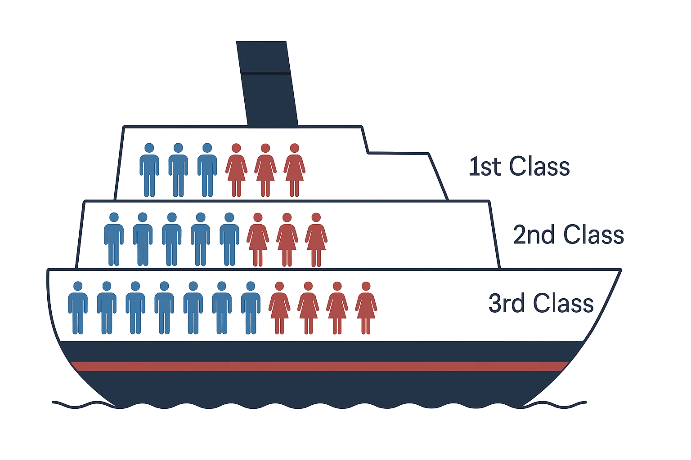
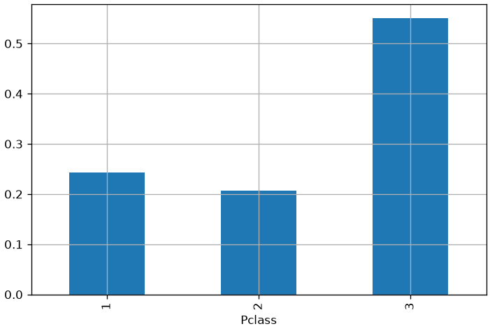
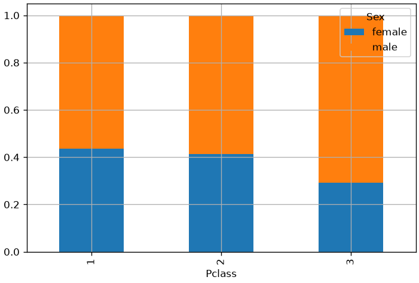

When working with data, we often ask: what values will variables assume?
In some cases, we can predict these values with perfect accuracy—like solving a system of equations that describes the speed of an object using Newtonian physics. These are deterministic systems, where outcomes follow directly from initial conditions.
But in many real-world scenarios, we face uncertainty. Modeling the relationship between variables in a deterministic way is not always possible. This uncertainty can arise from several sources:
Inherent randomness: Some events are truly stochastic, like rolling a die or drawing a card. Even with perfect knowledge, the outcome is unpredictable.
Incomplete observability: Sometimes we can’t see everything. In the Monty Hall problem, the game is deterministic, but the player lacks full information—so the outcome feels uncertain.
Incomplete modeling: Even in deterministic systems, we may lack the tools to model them fully. For example, a robot with only an RGB camera may estimate object positions in 2D, but cannot reconstruct full 3D coordinates. The missing dimensions introduce uncertainty.
Real-World Examples
Tossing a coin or rolling a die: These are often treated as random events, even if they could be modeled deterministically in theory. The complexity of initial conditions makes prediction intractable.
Diagnosing a medical condition: Different pathologies may share symptoms. Even with detailed observations, we may not be able to determine the exact diagnosis with certainty.
Why Probability Theory Matters
Probability theory provides a consistent framework for reasoning about uncertainty. It allows us to:
Quantify uncertain events
Combine known and unknown information
Derive new probabilistic statements using formal rules
In data analysis, probability is essential for:
Modeling randomness and variability
Making predictions under uncertainty
Interpreting patterns and relationships in data
In this lecture, we’ll revisit the core concepts of probability theory—starting with random variables—and apply them to real datasets like the Titanic. We’ll use tools like the sum rule, product rule, and Bayes’ theorem to answer questions such as:
What is the probability that a passenger survived?
What is the probability that a passenger was in 1st class, given that they survived?
What is the probability that a passenger was in 3rd class, given that they died?
These examples will help us connect abstract probability rules to concrete data-driven reasoning.
Random Experiments
In practice, when data acquisition is affected by uncertainty, we refer to the process as a random experiment. Informally, we define a random experiment as:
An experiment that can be repeated any number of times, potentially leading to different outcomes.
We introduce the following terminology:
Sample space\Omega = \{\omega_1, \ldots, \omega_k\} The set of all possible outcomes of the experiment.
Simple event\omega_i: a single possible outcome.
EventA \subseteq \Omega: a subset of the sample space representing a condition or outcome of interest. We usually denote \overline{A} = \Omega \setminus A as the complementary event to A, i.e., the event that A does not occur.
By definition:
The sample space \Omega is called the sure event or certain event, since it includes all possible outcomes.
The empty set \emptyset is called the impossible event, as it contains no outcomes.
Example: Rolling a Die
Consider the random experiment of rolling a fair six-sided die. The outcome is the number shown on the top face when the die lands.
Sample space: \Omega = \{1, 2, 3, 4, 5, 6\}
Simple event: \omega_1 = 1 represents the outcome “we roll a 1”.
Event examples:
“We obtain a 1”: A = \{1\}
“We obtain an even number”: A = \{2, 4, 6\}
Complement of the above: \overline{A} = \{1, 3, 5\} Represents “we obtain an odd number”.
This framework allows us to describe uncertainty in a structured way, preparing us to assign probabilities to events and reason about their likelihood.
Random Variables
We have so far talked about “statistical variables”. When dealing with uncertain events, we need to use the concept of ‘random variables’. Informally (from wikipedia):
A random variable is a variable whose values depend on outcomes of a random phenomenon.
A random variable is characterized by a set of possible values often called sample space, probability space, or alphabet (this last term comes from information theory, where we often deal with sources emitting symbols from an alphabet, in which case the values of X will be the symbols).
The definition of a random variable is very similar to that of a statistical variable. Formally, if \Omega is the sample space, we will define a random variable as a function:
X : \Omega \to E
Where E is a measurable space and often E=\mathbb{R}. This definition is similar to the one of statistical variable we have given before.
A random variable is generally denoted by a capital letter, such as X.
Similar to statistical variables, random variables can be discrete or continuous, scalar or multi-dimensional.
The following table lists some examples.
Discrete
Continuous
Scalar
Tossing a coin
Height of a person
Multidimensional
Pair of dice
Coordinates of a car
Toy Titanic Example

We will now consider a toy example derived inspired to the Titanic dataset.
In this example, we will assume to have a very small ship with passengers in three classes and belonging to two possible genders (male or female).
To reason in terms of probability, we have to think of a random experiment first. To this aim, let’s imagine the process of randomly picking a passenger from the list. This passenger will belong to one of the three classes and one of the two sexes. We will see how to use probability theory to answer different questions such as:
Is it more likely to pick a woman or a man?
If I pick a person from first class, is it more likely to pick a woman or a man?
If I know I picked a woman, is it more likely that I am picking from first, second or third class?
As you can see, answering these questions allows us to better understand and characterize the data, but can also be useful for practical applications. For instance, we may deliver different services to the different classes depending on the people who populate the classes.
More technically, we will consider the experiment of randomly drawing a passenger from one of the three classes. This happens in two stages:
We first randomly pick one of the three classes;
Then we randomly pick one of the passengers in the class;
After observing the sex of the passenger, we replace them in the same class.
The outcome of the experiment can be characterized by two random variables:
C represents the class, which can take values 1, 2, 3
S represents the sex of the passenger, which can take values male and female
If we pick a male passenger marble from the third class, then the outcome of the experiment can be characterized by the values C = 3, S = male;
Working Definition of Data
We will define “data” as follows:
The values assumed by a random variable
Example
For instance, if the sex of a passenger is male, then S = maleis data;
It should be clear that the ‘data’ is the pair <random variable, value> and not just the value. Indeed male alone would not be very useful (we don’t know which phenomenon it is related to), whereas S = male can be useful, as we know that S is the random variable describing the sex of the passenger;
In this example, the data S = male is representing a fact: ‘I randomly picked a passenger and their sex was male’. This is also called ‘an event’;
Probability
Since random variables are related to stochastic phenomena, we cannot say much about the outcome of a single phenomenon.
However, we expect to be able to characterize the class of experiments related to a random variable, to infer rules on what values the random variable is likely to take.
For instance, in the case of coin tossing, we can observe that, if I toss a coin for a large number of times, the number of heads will be roughly similar to the number of tails.
This kind of observations is useful, as it can give us a prior on what values we are likely to encounter and what are not.
To formally express such rules, we can define the concept of probability on a random variable.
Specifically, it is possible to assign a probability value to a given outcome. This is generally represented with a capital P:
For instance, P(C = 1) represents the probability of picking a from the first class in the previous example;
A probability P(C = 1) is a number comprised between 0 and 1 which quantifies how likely we believe the event to be;
0 means impossible;
1 means certain;
When it is clear from the context which variable we are referring to, the probability can also be expressed simply as:
P(male) = P(S = male)
Probability Axioms
Kolmogorov in 1933 provided three axioms which define the “main rules” that probability should follow:
Axiom 1 Any event has a probability in the range [0,1]:
0 \leq P(A) \leq 1, \forall A\subseteq \Omega
Axiom 2 The certain event has probability 1:
P(\Omega) = 1
Axiom 3 If A and B are disjoint event (i.e., A \cap B = \emptyset), then:
P(A \cup B) = P(A) + P(B)
From these axioms, the following corollaries follow:
When all outcomes in a random experiment are considered equally probable, this is called a Laplace experiment. In this case, we can calculate the probability of a given event A as the ratio between the favorable outcomes and the possible outcomes:
P(A) = \frac{|A|}{|\Omega|} = \frac{\text{number of favorable outcomes}}{\text{number of possible outcomes}}
For instance, if we are tossing a die:
The probability of obtaining any of the faces will be: \frac{1}{6};
The probability of obtaining an even number will be: \frac{|\{2,4,6\}|}{|\{1,2,3,4,5,6\}|} = \frac{3}{6} = \frac{1}{2}.
Estimating probabilities from observations
What about the cases in which we cannot make any assumption on the equal probability of events? In those cases we would like to estimate probabilities from observations. There are two main approaches to do so: frequentist and Bayesian.
Frequentist approach
Probability theory was initially developed to analyze the frequency of events. For instance, it can be used to study events like drawing a certain hand of cards in a poker game. These events are repeatable and can be dealt with using frequencies. In this sense, when we say that an event has probability p of occurring, it means that if we repeat the experiment infinitely many times, then a proportion p of the repetitions would result in that outcome.
According to the frequentist approach, we can estimate probabilities by repeating an experiment for a large number of times and then computing:
The number of trials: how many times we performed the experiment;
The number of favorable outcomes: how many times the outcome of the experiment was favorable.
The probability is hence obtained by dividing the number of favorable outcomes by the number of trials.
For instance, let’s suppose we want to estimate the probability of obtaining a ‘head’ by tossing a coin. Let’s suppose we toss the coin 1000 times and obtain 499 heads and 501 tails. We can compute the probability of obtaining head as follows:
Number of trials: 1000;
Number of favorable outcomes: 499.
The probability of obtaining head will be 499/1000=0.49
This is the approach we have seen so far in the course when dealing with relative frequencies.
Examples
The probability of obtaining ‘head’ when tossing a coin is 0.5. We know that because, if we toss a coin for a large number of times, about half of the times, we will obtain ‘head’;
The probability of picking a red ball from a box with 40 red balls and 60 blue balls is 0.4. We know this because, if we repeat the experiment for a large number of times, we will observe that proportion.
Bayesian Approach
The Bayesian approach to probability offers a different perspective on probability theory. Unlike the frequentist approach, which focuses on analyzing the frequency of events based on observations, the Bayesian approach allows us to incorporate prior knowledge and update our beliefs as new information becomes available.
In Bayesian probability, we view probability as a measure of uncertainty or belief. When we assign a probability to an event, it reflects our subjective degree of belief in the event’s likelihood. This approach is particularly useful when dealing with unique or one-time events where frequency-based analysis may not be applicable (e.g., “what is the probability that the sun will extinguish in 5 billion years?”).
We will discuss better the Bayesian approach when we’ll discuss Bayes theorem.
Example of Probability
Let’s consider the previous example of randomly picking passengers.
Suppose we repeat this experiment for 100 times and observe that:
We pick the first class 24 times;
We pick the second class 32 times;
We pick the third class 44 times;
Once we selected a urn, we are equally likely to select any of the passengers contained in it, but we know that sexes are not distributed evenly in the classes (see figure).
Using a frequentist approach, we can define the probabilities:
In frequentist terms, probabilities are the same as the relative frequencies of chapter 2. Let’s see how to compute such probabilities on the real Titanic dataset:
from matplotlib import pyplot as plttitanic['Pclass'].value_counts(normalize=True).sort_index().plot.bar() # relative frequenciesplt.grid()plt.show()

Joint probability
We can define univariate (= with respect to only one variable) probabilities P(C) as we have seen in the previous examples.
However, in many cases, it is useful to define probabilities on more than one variable at the time. For instance, we could be interested in studying the probability of picking a given fruit from a given box. In this case, we would be interested in the joint probabilityP(C,S).
In general, we can have joint probabilities with arbitrary numbers of variable. For instance, P\left( X_{1},X_{2},X_{3},\ldots,X_{n} \right).
Joint probabilities are symmetric, i.e., P(X,Y) = P(Y,X).
We should note that, when dealing with multiple unidimensional variables, we can always define a new multi-variate variable comprising all of them:
X = \left\lbrack X_{1},X_{2} \right\rbrack;
P(X) = P\left( X_{1},X_{2} \right).
Example Joint Probability
We can see the concept of joint probability in the context of the Titanic example.
We have seen how to define the univariate probability P(C) over the whole probability space of C.
However, we could be interested in the probability of both variables jointly: P(C,S), i.e., the joint probability of C and S.
To ‘measure’ the joint probability, we could repeat the experiment many times and observe the outcomes.
We can then build a table which keeps track of how many times we observed a given combination:
First Class
Second Class
Third Class
All
male
3
5
7
15
female
3
3
4
10
All
6
8
11
25
A table like this is called a “contincency table”.
From the table above, we can easily derive the joint probability of a given pair of values using the frequentist approach. For instance:
These univariate probabilities computed starting from joint probabilities are usually called marginal probabilities, because we are using the sums in the margin of the table.
We can obtain a joint probability table by dividing the table by the total number of trials (25):
First Class
Second Class
Third Class
All
male
3/25
5/25
7/25
15/25
female
3/25
3/25
4/25
10/25
All
6/25
8/25
11/25
25/25
Alternatively, with decimal values:
First Class
Second Class
Third Class
All
male
0.12
0.2
0.28
0.6
female
0.12
0.12
0.16
0.8
All
0.24
0.32
0.44
1
Computation of a Joint Probability Table
To compute a joint probability table from data, we should first compute a contingency table, which is also called a crosstab in Pandas:
pd.crosstab(titanic['Sex'], titanic['Pclass'])
Pclass
1
2
3
Sex
female
94
76
144
male
122
108
347
The table above indicates, for example, that 94 passengers in class 1 were female. By specifying margins=True, we can obtain row and column sums, which will indicate the absolute frequencies of each variable:
It should be noted that the marginal relative frequencies obtained are identical to the relative frequencies of the univariate samples:
titanic['Sex'].value_counts(normalize=True)
Sex
male 0.647587
female 0.352413
Name: proportion, dtype: float64
That are exactly the values in the last column of the previous table. Similarly, the univariate probabilities of Pclass are the same as the last row of the previous table:
In the previous example, we have seen how we can compute marginal (univariate) probabilities from the contingency table. This is possible because the contingency table contains information on how the different possible outcomes distribute over the sample space.
In general, we can compute marginal probabilities form joint probabilities (i.e., we don’t need to have the non-normalized frequency counts of the contingency table). Let us consider the general contingency table:
Y=y_1
Y=y_2
…
Y=y_l
Total
X=x_1
n_{11}
n_{12}
…
n_{1l}
n_{1+}
X=x_2
n_{21}
n_{22}
…
n_{2l}
n_{2+}
…
…
…
…
…
…
X=x_k
n_{k1}
n_{k2}
…
n_{kl}
n_{k+}
Total
n_{+1}
n_{+2}
…
n_{+l}
n
where:
n_{ij} is the number of times that we observe X=x_i and Y=y_j simultaneously (e.g., C=1 and S=male);
n_{i+} is the sum of all occurrences in which X = x_{i} (i.e., we are summing all values in row i): n_{i+} = \sum_{j} n_{ij};
n_{+j} is the sum of all occurrences in which Y = y_{j} (i.e., we are summing all values in column j): n_{+j} = \sum_{i} n_{ij};
We can compute the joint probability P(X = x_{i},Y = y_{j}) with a frequentist approach using the formula:
P\left( X = x_{i},\ Y = y_{j} \right) = \frac{n_{ij}}{n}
We note that we can define the marginal probabilities of X and Y as follows:
P\left( X = x_{i} \right) = \frac{n_{i+}}{n}.
P\left( Y = y_{j} \right) = \frac{n_{+j}}{n}.
We can hence write the marginal probability of X as follows:
This result is known as the sum rule of probability, which allows to estimate marginal probabilities from joint probabilities. This can be seen in more general terms as:
P(X = x) = \sum_{y}^{}{P(X = x,Y = y)}
The act of computing P(X) from P(X,Y) is also known as marginalization.
Conditional Probability and Product Rule
In many cases, we are interested in the probability of some event, given that some other event happened.
This is called conditionalprobability and is denoted as
P(X=x|Y=y)
and read as
P of X=x given that Y=y
In this context, Y = y is the condition, and we are interested in studying the probability of X only in the cases in which the condition is verified.
For instance, in our toy Titanic, we could be interested in P(S = male|C = 1), i.e., what is the probability of picking a male, given that we know that we are drawing from the first class?
Let’s consider our example contingency table of two variables again:
Y=y_1
Y=y_2
…
Y=y_l
Total
X=x_1
n_{11}
n_{12}
…
n_{1l}
n_{1+}
X=x_2
n_{21}
n_{22}
…
n_{2l}
n_{2+}
…
…
…
…
…
…
X=x_k
n_{k1}
n_{k2}
…
n_{kl}
n_{k+}
Total
n_{+1}
n_{+2}
…
n_{+l}
n
We can compute the conditional probability P(X = x_{i}|Y = y_{j}) using the frequentist approach:
P\left( X = x_{i} \middle| Y = y_{j} \right) = \frac{\#\ cases\ in\ which\ X = x_{i}\ and\ Y = y_{i}}{\#\ cases\ in\ which\ Y = y_{j}} = \frac{n_{ij}}{n_{+j}}
If we multiply the expression above by 1 = \frac{n}{n}, we obtain:
P\left( X = x_{i} \middle| Y = y_{j} \right) = \frac{n_{ij}}{n}\frac{n}{n_{+j}} = \frac{\frac{n_{ij}}{n}}{\frac{n_{+j}}{n}} = \frac{P\left( X = x_{i},Y = y_{j} \right)}{P(Y = y_{j})}
This leads us to the general definition of conditional probability:
P\left( X = x \middle| Y = y \right) = \frac{P(X = x,\ Y = y)}{P(Y = y)}
The conditional probability is defined only when P(Y = y) > 0, that is, we cannot define a probability conditioned on an event that never happens. It should be noted that, in general P\left( X \middle| Y \right) \neq P(X).
Product Rule (Factorization)
We can see the definition of conditional probability:
P\left( X = x \middle| Y = y \right) = \frac{P(X = x,\ Y = y)}{P(Y = y)}
As follows:
P(X = x,Y = y) = P\left( X = x \middle| Y = y \right)P(Y = y)
which is often referred to as the product rule.
The product rule allows to compute joint probabilities starting from conditional probabilities and marginal probabilities. This is useful because measuring joint probabilities generally involves creating large tables, whereas conditional and marginal probabilities might be easier to derive.
This operation of expressing a joint probability in terms of two factors is known as factorization.
How to compute a conditional probability?
We just said that factorization can be useful for computing joint probabilities starting from conditional probabilities. However, two questions arise:
How can we compute a conditional probability?
Is it easier than computing a joint probability?
Since conditional probabilities are obtained by restricting the probability space to a subset of the events, we can compute conditional probabilities by considering the observations which satisfy the condition.
For example, let’s say we want to compute the conditional probability:
P(S|C = 1)
That is to say, the probability of picking a person of a given sex, given that we know that we are considering the first class. Let’s consider again our contingency table:
First Class
Second Class
Third Class
All
male
3
5
7
15
female
3
3
4
10
All
6
8
11
25
To compute this probability, we can just consider all the observations that satisfy the conditionC = 1, which is equivalent to taking the first column of the full contingency table and compute the probabilities in a frequentist way:
Note that, in general, when the number of variables is large, this approach allows to save a lot of space and time as it is not necessary to even build the first contingency table, but only the second, restricted one is required (for instance, one may choose not to record all observations in which we where picking form the other classes).
Of course, the table above can be normalized to obtain a conditional probability table:
First Class
male
0.5
female
0.5
All
1
In Python, it is possible to obtain the conditional relative frequencies by normalizing by the appropriate row. Rather than conditioning on class, let’s condition on sex in this case. We can do so by normalizing by rows:
# normalize=0 indicates to condition on the first variablepd.crosstab(titanic['Sex'], titanic['Pclass'], normalize=0, margins=True)
Pclass
1
2
3
Sex
female
0.299363
0.242038
0.458599
male
0.211438
0.187175
0.601386
All
0.242424
0.206510
0.551066
From the table above, for example, we can infer:
f(Pclass=1|Sex=female) = 0.299363
f(Pclass=2|Sex=female) = 0.242038
f(Pclass=3|Sex=female) = 0.458599
These are the frequencies of women in the three classes. Similarly, the second row represents the conditional frequencies with respect to Sex=male. From the table, we notice that the distribution of passengers changes across the three classes. In particular, among men, the third class is more frequent than among women.
We can obtain the complementary perspective by conditioning on class instead:
# normalize=1 indicates conditioning on the first variablepd.crosstab(titanic['Sex'], titanic['Pclass'], normalize=1, margins=True)
Pclass
1
2
3
All
Sex
female
0.435185
0.413043
0.293279
0.352413
male
0.564815
0.586957
0.706721
0.647587
In this case, each column will be a probability distribution. For example:
P(Sex=female|Pclass=1) = 0.435185
P(Sex=male|Pclass=1) = 0.564815
We note that the proportion between men and women changes in the three classes, and in particular in the third class there are many more men than women.
Graphical Representations
Similarly to joint probabilities, we can also obtain visualizations from conditional probabilities. For instance:
The diagram above shows the distributions of passengers in the three classes for the two sexes. Now, these are two valid probability distributions summing to one for all the three values (three classes). This is clearer with a stacked plot:
We can obtain the graph of conditional frequencies with respect to the classes for a complementary view. In this case, to have a meaningful graph, we need to transpose the contingency table with a .T:
# normalize=1 indicates conditioning on the first variablepd.crosstab(titanic['Sex'], titanic['Pclass'], normalize=1).T.plot.bar(stacked=True)plt.grid()plt.show()

This graph now shows the distribution of sexes in the three classes, clearly showing that class 3 contains mostly males.
The Chain Rule of Conditional Probabilities
When dealing with multiple variables, the product rule can be applied in an iterative fashion, thus obtaining the ‘chain rule’ of conditional probabilities.
For instance:
P(X,Y,Z) = P\left( X \middle| Y,Z \right)P(Y,Z)
Since:
P(Y,Z) = P\left( Y \middle| Z \right)P(Z)
We obtain:
P(X,Y,Z) = P\left( X \middle| Y,Z \right)P\left( Y \middle| Z \right)P(Z)
Since joint probabilities are symmetric, we could equally obtain:
P(X,Y,Z) = P\left( Z \middle| Y,X \right)P\left( Y \middle| X \right)P(X)
Given two variables A and B, from the product rule, we obtain:
P(A,B) = P\left( A \middle| B \right)P(B)
P(B,A) = P\left( B \middle| A \right)P(A)
Since joint probabilities are symmetric, we have:
P(A,B) = P(B,A) \rightarrow P\left( A \middle| B \right)P(B) = P\left( B \middle| A \right)P(A)
Which implies:
P\left( A \middle| B \right) = \frac{P\left( B \middle| A \right)P(A)}{P(B)}
This last expression is known as Bayes’ Theorem (or Bayes’ rule).
Technically speaking, the Bayes’ rule can be used to “turn” probabilities of the kind P(A|B) into probabilities of the kind P(B|A).
More formally, the Bayes’ rule can be used to update our expectation that some event will happen (event A) when we observe some evidence (event B). This links to the Bayesian interpretation of probability, according to which probability can be seen as a reasonable expectation representing the quantification of a degree of belief (i.e., how much we believe some event will happen).
The different terms in the Bayes’ rule have specific names:
P(A) is called ‘the prior’ – this is our expectation that A happens when we do not have any other data to rely on
P(B|A) is called ‘the likelihood’ – this quantifies how likely it is to observe event B happening if we assume that event A has happened
P(B) is called ‘the evidence’ – this models the probability of observing event B
P(A|B) is called ‘the posterior’ – this is our updated probability, i.e., how likely it is A to happen once we have observed B happening
We’ll see an example in the section below.
Bayesian Probability Example
Let’s imagine we are trying to understand if a friend has COVID or not. If we do not know anything about our friend’s symptoms (i.e., we don’t know if they have any symptoms or not), then we would expect our friend to have COVID with a “prior” probability P(C). If we know that currently one people over two has COVID, we expect:
P(C) = \frac{1}{2}
Now, if our friend tells us he has fever, things change a bit. We are now interested in modeling the probability: P\left( C \middle| F \right). We can try to model it using Bayes’ rule:
P\left( C \middle| F \right) = \frac{P\left( F \middle| C \right)P(C)}{P(F)}
Note that it is not straightforward to estimate P(C|F) in a frequentist way. Ideally, we should take all people with a fever on earth and check how many of them has COVID. This is not feasible as people with just fever may never do a COVID test. On the contrary, measuring P(F|C) is easier: we take all people which we know have COVID (these may not be all people with COVID, but probably a large enough sample) and see how many of them have a fever. Let’s suppose that one people with COVID out of three has a fever. Then we can expect:
P\left( F \middle| C \right) = \frac{1}{3}
Now we need to estimate the evidence P(F). This can be done by considering how frequent it is for people to have a fever. Let’s say we use historical data and find out that one person out of five has fever. We finally have:
P\left( C \middle| F \right) = \frac{\frac{1}{3}\frac{1}{2}}{\frac{1}{5}} = \frac{5}{6}
We can interpret this use of the Bayes’ theorem as follows:
Before knowing anything about symptoms, we could only guess that our friend had COVID with a prior probability of P(C) = \frac{1}{2}
When we get to know that our friend has a fever, our expectation changes. We know that people with COVID often get a fever, but we also know that not all people with COVID get a fever, so we are not going to say that we are 100% certain that our friend has fever. Instead, we use Bayes’ rule to obtain an updated estimate P\left( C \middle| F \right) = \frac{5}{6} based on our knowledge of the likelihood P(F|C) (how likely it is for people with symptom to have COVID) and the evidence P(F) (how common is this symptom – if it is too common, then it is not so informative)
Independence and Conditional Independence
Two variables X and Y are independent if the outcome of one of the two does not influence the outcome of the other. Formally speaking, two variables are said to be independent if and only if:
P(X,Y) = P(X)P(Y)
It should be noted that the expression above is generally not true as we cannot always assume that two variables are independent.
Independence can be denoted as:
X\bot Y
Moreover, if two variables X and Y are independent, then:
P\left( X \middle| Y \right) = \frac{P(X,Y)}{P(Y)} = \frac{P(X)P(Y)}{P(Y)} = P(X)
This makes sense because it means that “the fact that Y happens does not influence the fact that X happens”, which is what we would expect of two independent variables X and Y.
Examples
Intuitively, two variables are independent if the values of one of them do not affect the values of the other one:
Weight and height of a person are not independent. Indeed, taller people are usually heavier.
Height and richness are independent, as the richness does not depend on the height of a person.
Conditional independence
Two random variables X and Y are said to be conditionally independent given a random variable Z if:
P\left( X,Y \middle| Z \right) = P\left( X \middle| Z \right)P\left( Y \middle| Z \right)
Conditional independence can be denoted as:
X\bot Y\ |\ Z
Example
Height and vocabulary are not independent: taller people are usually older, and hence they have a more sophisticated vocabulary (they know more words). However, if we condition on age, they become independent. Indeed, among people of the same age, height should not influence vocabulary. Hence, height and vocabulary are conditionally independent with respect to age.
Example of Probability Manipulation
Let’s now consider a real probability manipulation example. This time we will consider the following variables: Pclass and Survived. We will use observed proportions to answer questions such as:
What is the overall probability that a passenger survived?
What is the probability that a passenger was in 1st class and they survived?
What is the probability that a passenger survived, given that they were in 3rd class?
From the table above, we can answer our question as follows:
P(Pclass=1, Survived=1) = 0.15
Read the cell where the row Survived=1 meets the column Pclass=1. The cell just above it, 0.09, is the probability of being in first class and dying — a different question, and an easy one to answer by mistake.
What is the probability that a passenger survived, given that they were in 3rd class?
To answer this question, we need to compute a conditional distribution:
Suppose that we have three colored boxes r (red), b (blue), and g (green). Box r contains 3 apples, 4 oranges, and 3 limes, box b contains 1 apple, 1 orange, and 0 limes, and box g contains 3 apples, 3 oranges, and 4 limes. If a box is chosen at random with probabilities P(r)=0.2, P(b)=0.2, P(g)=0.6, and a piece of fruit is extracted from the box (with equal probability of selecting any of the items in the box), then what is the probability of selecting an apple? If we observe that the selected fruit is in fact an orange, what is the probability that it came from the green box?
[3] Heumann, Christian, and Michael Schomaker Shalabh. Introduction to statistics and data analysis. Springer International Publishing Switzerland, 2016.
Source Code
---title: "Probability for data analysis"stem: 03_probabilitychapter: 3format: html: code-tools: true ipynb: default---::: {.callout-tip icon=false}## Chapter resources[Slides (PDF)](../files/slides/03_probability.pdf){.btn .btn-sm .btn-primary}[Open in Colab](https://colab.research.google.com/github/antoninofurnari/fad-2627/blob/main/notes/03_probability.ipynb){.btn .btn-sm .btn-outline-primary}[Download PDF](../files/chapters/03_probability.pdf){.btn .btn-sm .btn-outline-primary .btn-chapter-pdf}[Practice quiz](../quiz.html?bank=03){.btn .btn-sm .btn-outline-primary}:::```{python}#| echo: false# Datasets are served by the site itself, so the same code runs here, on a# local clone and on Colab. See site/data/MANIFEST.yml.from pathlib import PathDATA ="../data/"if Path("../data").is_dir() else"https://antoninofurnari.github.io/fad-2627/data/"```When working with data, we often ask: **what values will variables assume?**In some cases, we can predict these values with perfect accuracy—like solving a system of equations that describes the speed of an object using Newtonian physics. These are **deterministic systems**, where outcomes follow directly from initial conditions.But in many real-world scenarios, we face **uncertainty**. Modeling the relationship between variables in a deterministic way is not always possible. This uncertainty can arise from several sources:- **Inherent randomness**: Some events are truly stochastic, like rolling a die or drawing a card. Even with perfect knowledge, the outcome is unpredictable.- **Incomplete observability**: Sometimes we can't see everything. In the Monty Hall problem, the game is deterministic, but the player lacks full information—so the outcome feels uncertain.- **Incomplete modeling**: Even in deterministic systems, we may lack the tools to model them fully. For example, a robot with only an RGB camera may estimate object positions in 2D, but cannot reconstruct full 3D coordinates. The missing dimensions introduce uncertainty.### Real-World Examples- **Tossing a coin or rolling a die**: These are often treated as random events, even if they could be modeled deterministically in theory. The complexity of initial conditions makes prediction intractable.- **Diagnosing a medical condition**: Different pathologies may share symptoms. Even with detailed observations, we may not be able to determine the exact diagnosis with certainty.## Why Probability Theory MattersProbability theory provides a **consistent framework** for reasoning about uncertainty. It allows us to:- Quantify uncertain events- Combine known and unknown information- Derive new probabilistic statements using formal rulesIn data analysis, probability is essential for:- Modeling randomness and variability- Making predictions under uncertainty- Interpreting patterns and relationships in dataIn this lecture, we’ll revisit the core concepts of probability theory—starting with random variables—and apply them to real datasets like the Titanic. We'll use tools like the **sum rule**, **product rule**, and **Bayes’ theorem** to answer questions such as:- What is the probability that a passenger survived?- What is the probability that a passenger was in 1st class, given that they survived?- What is the probability that a passenger was in 3rd class, given that they died?These examples will help us connect abstract probability rules to concrete data-driven reasoning.### Random ExperimentsIn practice, when data acquisition is affected by uncertainty, we refer to the process as a **random experiment**. Informally, we define a random experiment as:> An experiment that can be repeated any number of times, potentially leading to different outcomes.We introduce the following terminology:- **Sample space** $\Omega = \{\omega_1, \ldots, \omega_k\}$ The set of all possible outcomes of the experiment.- **Simple event** $\omega_i$: a single possible outcome.- **Event** $A \subseteq \Omega$: a subset of the sample space representing a condition or outcome of interest. We usually denote $\overline{A} = \Omega \setminus A$ as the complementary event to $A$, i.e., the event that $A$ does not occur.By definition:- The sample space $\Omega$ is called the **sure event** or **certain event**, since it includes all possible outcomes.- The empty set $\emptyset$ is called the **impossible event**, as it contains no outcomes.#### Example: Rolling a DieConsider the random experiment of rolling a fair six-sided die. The outcome is the number shown on the top face when the die lands.- **Sample space**: $\Omega = \{1, 2, 3, 4, 5, 6\}$- **Simple event**: $\omega_1 = 1$ represents the outcome “we roll a 1”.- **Event examples**: - “We obtain a 1”: $A = \{1\}$ - “We obtain an even number”: $A = \{2, 4, 6\}$ - Complement of the above: $\overline{A} = \{1, 3, 5\}$ Represents “we obtain an odd number”.This framework allows us to describe uncertainty in a structured way, preparing us to assign probabilities to events and reason about their likelihood.## Random VariablesWe have so far talked about "statistical variables". Whendealing with uncertain events, we need to use the concept of 'randomvariables'. Informally (from wikipedia):> A random variable is a variable whose values depend on outcomes of a random phenomenon.A random variable is characterized by a set of possible values oftencalled *sample space*, *probability space*, or *alphabet* (this last term comes frominformation theory, where we often deal with sources emitting symbolsfrom an alphabet, in which case the values of $X$ will be the symbols).The definition of a random variable is very similar to that of a statistical variable. Formally, if $\Omega$ is the *sample space*, we will define a random variable as a function:$$ X : \Omega \to E $$Where **E is a measurable space** and often $E=\mathbb{R}$. This definition is similar to the one of statistical variable we have given before.A random variable is generally denoted by a *capital letter*, such as$X$.Similar to statistical variables, random variables can be *discrete* or *continuous*, *scalar* or *multi-dimensional*.The following table lists some examples.||**Discrete**|**Continuous**||-|-|-||**Scalar** | Tossing a coin | Height of a person||**Multidimensional** | Pair of dice | Coordinates of a car|### Toy Titanic ExampleWe will now consider a toy example derived inspired to the Titanic dataset.In this example, we will assume to have a very small ship with passengers in three classes and belonging to two possible genders (male or female).To reason in terms of probability, we have to think of a random experiment first. To this aim, let's imagine the process of randomly picking a passenger from the list. This passenger will belong to one of the three classes and one of the two sexes. We will see how to use probability theory to answer different questions such as:- Is it more likely to pick a woman or a man?- If I pick a person from first class, is it more likely to pick a woman or a man?- If I know I picked a woman, is it more likely that I am picking from first, second or third class?As you can see, answering these questions allows us to better understand and characterize the data, but can also be useful for practical applications. For instance, we may deliver different services to the different classes depending on the people who populate the classes.More technically, we will consider the experiment of randomly drawing a passenger from one ofthe three classes. This happens in two stages:- We first randomly pick one of the three classes;- Then we randomly pick one of the passengers in the class;- After observing the sex of the passenger, we replace them in the same class.The outcome of the experiment can be characterized by *two randomvariables*:- C represents the class, which can take values $1, 2, 3$- S represents the sex of the passenger, which can take values $male$ and $female$If we pick a male passenger marble from the third class, then the outcome of the experiment can be characterized by the values $C = 3$, $S = male$;## Working Definition of DataWe will define "data" as follows:> The values assumed by a random variable### Example- For instance, if the sex of a passenger is $male$, then $S = male$ *is data*;- It should be clear that the 'data' is *the pair* \<random variable, value\> and not just the value. Indeed $male$ alone would not be very useful (we don't know which phenomenon it is related to), whereas $S = male$ can be useful, as we know that $S$ is the random variable describing the sex of the passenger;- In this example, the data $S = male$ is representing a fact: 'I randomly picked a passenger and their sex was $male$'. This is also called 'an event';## ProbabilitySince random variables are related to stochastic phenomena, we cannotsay much about the outcome of a single phenomenon.However, we expect to be able to characterize the class of experimentsrelated to a random variable, to infer rules on what values the randomvariable is likely to take.For instance, in the case of coin tossing, we can observe that, if Itoss a coin for a large number of times, the number of heads will beroughly similar to the number of tails.This kind of observations is useful, as it can give us a prior on whatvalues we are likely to encounter and what are not.To formally express such rules, we can define the concept of probabilityon a random variable.Specifically, it is possible to assign a probability value to a givenoutcome. This is generally represented with a capital P:- For instance, $P(C = 1)$ represents the probability of picking a from the first class in the previous example;- A probability $P(C = 1)$ is a number comprised between 0 and 1 which quantifies how likely we believe the event to be; - 0 means impossible; - 1 means certain;When it is clear from the context which variable we are referring to,the probability can also be expressed simply as:$$P(male) = P(S = male)$$### Probability AxiomsKolmogorov in 1933 provided three axioms which define the "main rules" that probability should follow:**Axiom 1**Any event has a probability in the range $[0,1]$:$$0 \leq P(A) \leq 1, \forall A\subseteq \Omega$$**Axiom 2**The certain event has probability 1:$$P(\Omega) = 1$$**Axiom 3**If $A$ and $B$ are disjoint event (i.e., $A \cap B = \emptyset$), then:$$P(A \cup B) = P(A) + P(B)$$From these axioms, the following corollaries follow:**Complement rule**$$P(\overline{A}) = 1 - P(A)$$**Probability of the impossible event**$$P(\emptyset) = P(\overline{\Omega}) = 1 - P(\Omega) = 0$$**General addition rule (for any events $A$ and $B$)**$$P(A \cup B) = P(A) + P(B) - P(A \cap B)$$**Monotonicity (if $A \subseteq B$)**$$A \subseteq B \Rightarrow P(A) \leq P(B)$$### Laplace Probability**When all outcomes in a random experiment are considered equally probable**, this is called a **Laplace experiment**. In this case, we can calculate the probability of a given event $A$ as the ratio between the favorable outcomes and the possible outcomes:$$P(A) = \frac{|A|}{|\Omega|} = \frac{\text{number of favorable outcomes}}{\text{number of possible outcomes}}$$For instance, if we are tossing a die:* The probability of obtaining any of the faces will be: $\frac{1}{6}$;* The probability of obtaining an even number will be: $\frac{|\{2,4,6\}|}{|\{1,2,3,4,5,6\}|} = \frac{3}{6} = \frac{1}{2}$.### Estimating probabilities from observationsWhat about the cases in which we cannot make any assumption on the equal probability of events? In those cases we would like to estimate probabilities from observations. There are two main approaches to do so: frequentist and Bayesian.#### Frequentist approachProbability theory was initially developed to analyze the frequency ofevents. For instance, it can be used to study events like drawing acertain hand of cards in a poker game. These events are repeatable andcan be dealt with using frequencies. In this sense, when we say that anevent has probability $p$ of occurring, it means that if we repeat theexperiment infinitely many times, then a proportion $p$ of therepetitions would result in that outcome.According to the frequentist approach, we can estimate probabilities byrepeating an experiment for a large number of times and then computing:- The number of trials: how many times we performed the experiment;- The number of favorable outcomes: how many times the outcome of the experiment was favorable.The probability is hence obtained by dividing the number of favorableoutcomes by the number of trials. For instance, let's suppose we want to estimate the probability ofobtaining a 'head' by tossing a coin. Let's suppose we toss the coin1000 times and obtain 499 heads and 501 tails. We can compute theprobability of obtaining head as follows:- Number of trials: 1000;- Number of favorable outcomes: 499.The probability of obtaining head will be 499/1000=0.49This is the approach we have seen so far in the course when dealing with relative frequencies.##### Examples- The probability of obtaining 'head' when tossing a coin is 0.5. We know that because, if we toss a coin for a large number of times, about half of the times, we will obtain 'head';- The probability of picking a red ball from a box with 40 red balls and 60 blue balls is 0.4. We know this because, if we repeat the experiment for a large number of times, we will observe that proportion.#### Bayesian ApproachThe Bayesian approach to probability offers a different perspective on probability theory. Unlike the frequentist approach, which focuses on analyzing the frequency of events based on observations, the **Bayesian approach allows us to incorporate prior knowledge and update our beliefs as new information becomes available**.In Bayesian probability, we view **probability as a measure of uncertainty or belief**. When we assign a probability to an event, it reflects our **subjective degree of belief in the event's likelihood**. This approach is particularly useful when dealing with unique or one-time events where frequency-based analysis may not be applicable (e.g., "**what is the probability that the sun will extinguish in 5 billion years?**").We will discuss better the Bayesian approach when we'll discuss Bayes theorem.### Example of ProbabilityLet's consider the previous example of randomly picking passengers.Suppose we repeat this experiment for $100$ times and observe that:- We pick the first class $24$ times;- We pick the second class $32$ times;- We pick the third class $44$ times;- Once we selected a urn, we are equally likely to select any of the passengers contained in it, but we know that sexes are not distributed evenly in the classes (see figure).Using a frequentist approach, we can define the probabilities:- $P(C = 1) = \frac{24}{100}$- $P(C = 2) = \frac{32}{100}$- $P(C = 3) = \frac{44}{100}$This is done by using the formula:* $P(X = x) = \frac{\#\ of\ times\ X = x}{\#\ trials}$### Computation of frequentist probability valuesIn frequentist terms, probabilities are the same as the relative frequencies of [chapter 2](02_describing_visualizing.qmd). Let's see how to compute such probabilities on the real Titanic dataset:```{python}import pandas as pdtitanic = pd.read_csv(DATA +"titanic.csv", index_col='PassengerId')titanic['Pclass'].value_counts(normalize=True).sort_index() # relative frequencies```We can also visualize them for more clarity:```{python}from matplotlib import pyplot as plttitanic['Pclass'].value_counts(normalize=True).sort_index().plot.bar() # relative frequenciesplt.grid()plt.show()```## Joint probabilityWe can define **univariate** (= with respect to only one variable)probabilities $P(C)$ as we have seen in the previousexamples.However, in many cases, it is useful to define probabilities on morethan one variable at the time. For instance, we could be interested instudying the probability of picking a given fruit from a given box. Inthis case, we would be interested in the **joint probability** $P(C,S)$.In general, we can have joint probabilities with arbitrary numbers ofvariable. For instance,$P\left( X_{1},X_{2},X_{3},\ldots,X_{n} \right)$.Joint probabilities are symmetric, i.e., $P(X,Y) = P(Y,X)$.We should note that, when dealing with multiple unidimensionalvariables, we can always define a new multi-variate variable comprisingall of them:- $X = \left\lbrack X_{1},X_{2} \right\rbrack;$- $P(X) = P\left( X_{1},X_{2} \right)$.### Example Joint ProbabilityWe can see the concept of joint probability in the context of theTitanic example.We have seen how to define the univariate probability $P(C)$ over thewhole probability space of $C$.However, we could be interested in the probability of both variablesjointly: $P(C,S)$, i.e., the joint probability of $C$ and $S$.To 'measure' the joint probability, we could repeat the experimentmany times and observe the outcomes.We can then build a table which keeps track of how manytimes we observed a given combination:|| First Class | Second Class | Third Class | All ||- |- |- |- |- || male | 3 | 5 | 7 | 15 || female | 3 | 3 | 4 | 10 || All | 6 | 8 | 11 | 25 |A table like this is called a "**contincency table**".From the table above, we can easily derive the joint probability of agiven pair of values using the **frequentist approach**. For instance:$$P(C = 1,S = male) = \frac{\#\ times\ (1,male)\ occurs}{\#\ trials} = \frac{3}{25}$$Similarly, we can derive other values:- $P(C = 1,S = female) = \frac{3}{25}$- $P(C = 2,S = male) = \frac{5}{25}$- $P(C = 2,S = female) = \frac{3}{25}$- $P(C = 3,S = male) = \frac{7}{25}$- $P(C = 3,S = female) = \frac{4}{25}$Note that we can also obtain the univariate probabilities by using thevalues in the "sum" row and column. For instance:$$P(C = 1) = \frac{\#\ times\ C=1\ occurred}{\#\ trials} = \frac{3 + 3}{25} = \frac{6}{25}$$Similarly:- $P(S = male) = \frac{15}{25}$- $P(S = female) = \frac{10}{25}$- $P(C = 2) = \frac{8}{25}$- $P(C = 3) = \frac{11}{25}$These univariate probabilities computed starting from jointprobabilities are usually called **marginal probabilities**, because we are usingthe sums in the margin of the table.We can obtain a joint probability table by dividing the table by the total number of trials (25):|| First Class | Second Class | Third Class | All ||- |- |- |- |- || male | 3/25 | 5/25 | 7/25 | 15/25 || female | 3/25 | 3/25 | 4/25 | 10/25 || All | 6/25 | 8/25 | 11/25 | 25/25 |Alternatively, with decimal values:|| First Class | Second Class | Third Class | All ||- |- |- |- |- || male | 0.12 | 0.2 | 0.28 | 0.6 || female | 0.12 | 0.12 | 0.16 | 0.8 || All | 0.24 | 0.32 | 0.44 | 1 |#### Computation of a Joint Probability TableTo compute a joint probability table from data, we should first compute a contingency table, which is also called a crosstab in Pandas:```{python}pd.crosstab(titanic['Sex'], titanic['Pclass'])```The table above indicates, for example, that $94$ passengers in class $1$ were female. By specifying `margins=True`, we can obtain row and column sums, which will indicate the absolute frequencies of each variable:```{python}pd.crosstab(titanic['Sex'], titanic['Pclass'],margins=True)```We can obtain the joint relative frequency table by passing `normalize=True` to the crosstab function:```{python}pd.crosstab(titanic['Sex'], titanic['Pclass'], normalize=True, margins=True)```It should be noted that the marginal relative frequencies obtained are identical to the relative frequencies of the univariate samples:```{python}titanic['Sex'].value_counts(normalize=True)```That are exactly the values in the last column of the previous table. Similarly, the univariate probabilities of Pclass are the same as the last row of the previous table:```{python}titanic['Pclass'].value_counts(normalize=True)```#### Graphical representationsWe can use contingency tables and joint probability tables to obtain graphical representations. For example:```{python}pd.crosstab(titanic['Sex'], titanic['Pclass']).plot.bar()plt.grid()plt.show()```The diagram above shows the distributions of people in the two classes, grouped by the two different sexes.From this, we note that many passengers are men and in third class. In these cases, a stacked plot can sometimes be useful:```{python}pd.crosstab(titanic['Sex'], titanic['Pclass']).plot.bar(stacked=True)plt.grid()plt.show()```We can reason in terms of joint probabilities by normalizing the counts:```{python}pd.crosstab(titanic['Sex'], titanic['Pclass'], normalize=True).plot.bar(stacked=True)plt.grid()plt.show()```## Sum Rule (Marginal Probability)In the previous example, we have seen how we can compute **marginal(univariate) probabilities** from the contingency table. This ispossible because the contingency table contains information on how thedifferent possible outcomes distribute over the sample space.In general, we can compute marginal probabilities form jointprobabilities (i.e., we don't need to have the non-normalized frequencycounts of the contingency table). Let us consider the general contingency table:|| Y=$y_1$ | Y=$y_2$ | ... | Y=$y_l$ | Total ||-------------|------------|------------|---------|-|-|| X=$x_1$ | $n_{11}$ | $n_{12}$ | ... | $n_{1l}$ | $n_{1+}$ || X=$x_2$ | $n_{21}$ | $n_{22}$ | ... | $n_{2l}$ | $n_{2+}$ || ... | ... | ... | ... | ...| ...| ...|| X=$x_k$ | $n_{k1}$ | $n_{k2}$ | ... | $n_{kl}$ | $n_{k+}$ || Total | $n_{+1}$ | $n_{+2}$ | ... | $n_{+l}$ | $n$ |where: - $n_{ij}$ is the number of times that we observe $X=x_i$ and $Y=y_j$ simultaneously (e.g., $C=1$ and $S=male$); - $n_{i+}$ is the sum of all occurrences in which $X = x_{i}$ (i.e., we are summing all values in row $i$): $n_{i+} = \sum_{j} n_{ij}$; - $n_{+j}$ is the sum of all occurrences in which $Y = y_{j}$ (i.e., we are summing all values in column $j$): $n_{+j} = \sum_{i} n_{ij}$;We can compute the joint probability $P(X = x_{i},Y = y_{j})$ with afrequentist approach using the formula:$$P\left( X = x_{i},\ Y = y_{j} \right) = \frac{n_{ij}}{n}$$We note that we can define the marginal probabilities of X and Yas follows:- $P\left( X = x_{i} \right) = \frac{n_{i+}}{n}$.- $P\left( Y = y_{j} \right) = \frac{n_{+j}}{n}$.We can hence write the marginal probability of $X$ as follows:$$P\left( X = x_{i} \right) = \frac{n_{i+}}{n} = \frac{\sum_{j}n_{ij}}{n} = \sum_{j}\frac{n_{ij}}{n} = \sum_{j}^{}{P(X = x_{i},Y = y_{j})}$$This result is known as the **sum rule of probability**, which allows toestimate marginal probabilities from joint probabilities. This can beseen in more general terms as:$$P(X = x) = \sum_{y}^{}{P(X = x,Y = y)}$$The act of computing $P(X)$ from $P(X,Y)$ is also known asmarginalization.## Conditional Probability and Product Rule**In many cases, we are interested in the probability of some event,given that some other event happened.**This is called **conditional** **probability** and is denoted as $$P(X=x|Y=y)$$and read as > P of X=x given that Y=yIn this context, $Y = y$ is the condition, and we areinterested in studying the probability of X only in the cases in whichthe condition is verified.For instance, in our toy Titanic, we could be interested in$P(S = male|C = 1)$, i.e., what is the probability of picking a male,given that we know that we are drawing from the first class?Let's consider our example contingency table of two variables again:|| Y=$y_1$ | Y=$y_2$ | ... | Y=$y_l$ | Total ||-------------|------------|------------|---------|-|-|| X=$x_1$ | $n_{11}$ | $n_{12}$ | ... | $n_{1l}$ | $n_{1+}$ || X=$x_2$ | $n_{21}$ | $n_{22}$ | ... | $n_{2l}$ | $n_{2+}$ || ... | ... | ... | ... | ...| ...| ...|| X=$x_k$ | $n_{k1}$ | $n_{k2}$ | ... | $n_{kl}$ | $n_{k+}$ || Total | $n_{+1}$ | $n_{+2}$ | ... | $n_{+l}$ | $n$ |We can compute the conditional probability$P(X = x_{i}|Y = y_{j})$ using the frequentist approach:$$P\left( X = x_{i} \middle| Y = y_{j} \right) = \frac{\#\ cases\ in\ which\ X = x_{i}\ and\ Y = y_{i}}{\#\ cases\ in\ which\ Y = y_{j}} = \frac{n_{ij}}{n_{+j}}$$If we multiply the expression above by $1 = \frac{n}{n}$, we obtain:$$P\left( X = x_{i} \middle| Y = y_{j} \right) = \frac{n_{ij}}{n}\frac{n}{n_{+j}} = \frac{\frac{n_{ij}}{n}}{\frac{n_{+j}}{n}} = \frac{P\left( X = x_{i},Y = y_{j} \right)}{P(Y = y_{j})}$$This leads us to the general definition of conditional probability:$$P\left( X = x \middle| Y = y \right) = \frac{P(X = x,\ Y = y)}{P(Y = y)}$$The conditional probability is defined only when $P(Y = y) > 0$, thatis, we cannot define a probability conditioned on an event that neverhappens. It should be noted that, in general$P\left( X \middle| Y \right) \neq P(X)$.### Product Rule (Factorization)We can see the definition of conditional probability:$$P\left( X = x \middle| Y = y \right) = \frac{P(X = x,\ Y = y)}{P(Y = y)}$$As follows:$$P(X = x,Y = y) = P\left( X = x \middle| Y = y \right)P(Y = y)$$which is often referred to as **the product rule**.*The product rule allows to compute joint probabilities starting fromconditional probabilities and marginal probabilities.* This is usefulbecause measuring joint probabilities generally involves creating largetables, whereas conditional and marginal probabilities might be easierto derive.This operation of expressing a joint probability in terms of two factorsis known as *factorization*.### How to compute a conditional probability?We just said that factorization can be useful for computing jointprobabilities starting from conditional probabilities. However, twoquestions arise: - How can we compute a conditional probability?- Is it easier than computing a joint probability?Since conditional probabilities are obtained by *restricting* theprobability space to *a subset* of the events, we can computeconditional probabilities by considering the observations which satisfythe condition.For example, let's say we want to compute the conditional probability:$$P(S|C = 1)$$That is to say, the probability of picking a person of a given sex, giventhat we know that we are considering the first class. Let's consider again our contingency table:|| First Class | Second Class | Third Class | All ||- |- |- |- |- || male | 3 | 5 | 7 | 15 || female | 3 | 3 | 4 | 10 || All | 6 | 8 | 11 | 25 |To compute this probability, we can just *consider all the observationsthat satisfy the condition* $C = 1$, which is equivalent to taking thefirst column of the full contingency table and compute theprobabilities in a frequentist way:|| First Class ||-|-||male | 3 ||female | 3 ||All | 6 |$$ P(S=male|C=1) = \frac{3}{6} $$$$ P(S=female|C=1) = \frac{3}{6} $$Note that, in general, when the number of variables is large, thisapproach allows to save a lot of space and time as it is not necessaryto even build the first contingency table, but only the second,restricted one is required (for instance, one may choose not to recordall observations in which we where picking form the other classes).Of course, the table above can be normalized to obtain a conditional probability table:|| First Class ||-|-||male | 0.5 ||female | 0.5 ||All | 1 |In Python, it is possible to obtain the conditional relative frequencies by normalizing by the appropriate row. Rather than conditioning on class, let's condition on sex in this case. We can do so by normalizing by rows:```{python}# normalize=0 indicates to condition on the first variablepd.crosstab(titanic['Sex'], titanic['Pclass'], normalize=0, margins=True)```From the table above, for example, we can infer:* $f(Pclass=1|Sex=female) = 0.299363$* $f(Pclass=2|Sex=female) = 0.242038$* $f(Pclass=3|Sex=female) = 0.458599$These are the frequencies of women in the three classes. Similarly, the second row represents the conditional frequencies with respect to `Sex=male`. From the table, we notice that the distribution of passengers changes across the three classes. In particular, among men, the third class is more frequent than among women.We can obtain the complementary perspective by conditioning on class instead:```{python}# normalize=1 indicates conditioning on the first variablepd.crosstab(titanic['Sex'], titanic['Pclass'], normalize=1, margins=True)```In this case, each column will be a probability distribution. For example:* $P(Sex=female|Pclass=1) = 0.435185$* $P(Sex=male|Pclass=1) = 0.564815$We note that the proportion between men and women changes in the three classes, and in particular in the third class there are many more men than women.### Graphical RepresentationsSimilarly to joint probabilities, we can also obtain visualizations from conditional probabilities. For instance:```{python}pd.crosstab(titanic['Sex'], titanic['Pclass'], normalize=0).plot.bar()plt.grid()plt.show()```The diagram above shows the distributions of passengers in the three classes for the two sexes. Now, these are two valid probability distributions summing to one for all the three values (three classes). This is clearer with a stacked plot:```{python}pd.crosstab(titanic['Sex'], titanic['Pclass'], normalize=0).plot.bar(stacked=True)plt.grid()plt.show()```We can obtain the graph of conditional frequencies with respect to the classes for a complementary view. In this case, to have a meaningful graph, we need to transpose the contingency table with a `.T`:```{python}# normalize=1 indicates conditioning on the first variablepd.crosstab(titanic['Sex'], titanic['Pclass'], normalize=1).T.plot.bar(stacked=True)plt.grid()plt.show()```This graph now shows the distribution of sexes in the three classes, clearly showing that class 3 contains mostly males.## The Chain Rule of Conditional ProbabilitiesWhen dealing with multiple variables, the product rule can be applied inan iterative fashion, thus obtaining the 'chain rule' of conditionalprobabilities.For instance:$$P(X,Y,Z) = P\left( X \middle| Y,Z \right)P(Y,Z)$$Since:$$P(Y,Z) = P\left( Y \middle| Z \right)P(Z)$$We obtain:$$P(X,Y,Z) = P\left( X \middle| Y,Z \right)P\left( Y \middle| Z \right)P(Z)$$Since joint probabilities are symmetric, we could equally obtain:$$P(X,Y,Z) = P\left( Z \middle| Y,X \right)P\left( Y \middle| X \right)P(X)$$This rule can be formalized as follows:$$P\left( X_{1},\ldots,\ X_{n} \right) = P\left( X_{1} \right)\prod_{i = 2}^{n}{P(X_{i}|X_{1},\ldots,\ X_{i - 1})}$$## Bayes' TheoremGiven two variables A and B, from the product rule, we obtain:- $P(A,B) = P\left( A \middle| B \right)P(B)$- $P(B,A) = P\left( B \middle| A \right)P(A)$Since joint probabilities are symmetric, we have:$$P(A,B) = P(B,A) \rightarrow P\left( A \middle| B \right)P(B) = P\left( B \middle| A \right)P(A)$$Which implies:$$P\left( A \middle| B \right) = \frac{P\left( B \middle| A \right)P(A)}{P(B)}$$This last expression is known as Bayes' Theorem (or Bayes' rule).Technically speaking, the Bayes' rule can be used to "turn"probabilities of the kind $P(A|B)$ into probabilities of the kind$P(B|A)$.More formally, the Bayes' rule can be used to **updateour expectation that some event will happen (event A) when we observesome evidence (event B)**. This links to the Bayesian interpretation ofprobability, according to which probability can be seen as **a*reasonable expectation* representing *the quantification of a degree ofbelief*** (i.e., how much we believe some event will happen).The different terms in the Bayes' rule have specific names:- $P(A)$ is called 'the prior' -- this is our expectation that A happens when we do not have any other data to rely on- $P(B|A)$ is called 'the likelihood' -- this quantifies how likely it is to observe event B happening if we assume that event A has happened- $P(B)$ is called 'the evidence' -- this models the probability of observing event B- $P(A|B)$ is called 'the posterior' -- this is our updated probability, i.e., how likely it is A to happen once we have observed B happeningWe'll see an example in the section below.### Bayesian Probability ExampleLet's imagine we are trying to understand if a friend has COVID or not.If we do not know anything about our friend's symptoms (i.e., we don'tknow if they have any symptoms or not), then we would expect our friendto have COVID with a "prior" probability $P(C)$. If we know thatcurrently one people over two has COVID, we expect:$$P(C) = \frac{1}{2}$$Now, if our friend tells us he has fever, things change a bit. We arenow interested in modeling the probability:$P\left( C \middle| F \right)$. We can try to model it using Bayes'rule:$$P\left( C \middle| F \right) = \frac{P\left( F \middle| C \right)P(C)}{P(F)}$$Note that it is not straightforward to estimate $P(C|F)$ in afrequentist way. Ideally, we should take all people with a fever onearth and check how many of them has COVID. This is not feasible aspeople with just fever may never do a COVID test. On the contrary,measuring $P(F|C)$ is easier: we take all people which we know haveCOVID (these may not be all people with COVID, but probably a largeenough sample) and see how many of them have a fever. Let's suppose thatone people with COVID out of three has a fever. Then we can expect:$$P\left( F \middle| C \right) = \frac{1}{3}$$Now we need to estimate the evidence $P(F)$. This can be done byconsidering how frequent it is for people to have a fever. Let's say weuse historical data and find out that one person out of five has fever.We finally have:$$P\left( C \middle| F \right) = \frac{\frac{1}{3}\frac{1}{2}}{\frac{1}{5}} = \frac{5}{6}$$We can interpret this use of the Bayes' theorem as follows:- Before knowing anything about symptoms, we could only guess that our friend had COVID with a prior probability of $P(C) = \frac{1}{2}$- When we get to know that our friend has a fever, our expectation changes. We know that people with COVID often get a fever, but we also know that not all people with COVID get a fever, so we are not going to say that we are 100% certain that our friend has fever. Instead, we use Bayes' rule to obtain an updated estimate $P\left( C \middle| F \right) = \frac{5}{6}$ based on our knowledge of the likelihood $P(F|C)$ (how likely it is for people with symptom to have COVID) and the evidence $P(F)$ (how common is this symptom -- if it is too common, then it is not so informative)## Independence and Conditional IndependenceTwo variables $X$ and $Y$ are independent if the outcome of one of thetwo does not influence the outcome of the other. Formally speaking, twovariables are **said to be independent** if and only if:$$P(X,Y) = P(X)P(Y)$$It should be noted that the expression above **is generally not true**as we cannot always assume that two variables are independent.Independence can be denoted as:$$X\bot Y$$Moreover, if two variables $X$ and $Y$ are independent, then:$$P\left( X \middle| Y \right) = \frac{P(X,Y)}{P(Y)} = \frac{P(X)P(Y)}{P(Y)} = P(X)$$This makes sense because it means that "the fact that $Y$ happens doesnot influence the fact that $X$ happens", which is what we would expectof two independent variables $X$ and $Y$.### ExamplesIntuitively, two variables are independent if the values of one of themdo not affect the values of the other one:- Weight and height of a person are **not independent**. Indeed, taller people are usually heavier.- Height and richness are **independent**, as the richness does not depend on the height of a person.### Conditional independenceTwo random variables $X$ and $Y$ are said to be **conditionallyindependent** given a random variable $Z$ if:$$P\left( X,Y \middle| Z \right) = P\left( X \middle| Z \right)P\left( Y \middle| Z \right)$$Conditional independence can be denoted as:$$X\bot Y\ |\ Z$$#### ExampleHeight and vocabulary are not independent: taller people are usuallyolder, and hence they have a more sophisticated vocabulary (they knowmore words). However, if we condition on age, they become independent.Indeed, among people of the same age, height should not influencevocabulary. Hence, height and vocabulary are **conditionallyindependent** with respect to age.## Example of Probability ManipulationLet's now consider a real probability manipulation example. This time we will consider the following variables: `Pclass` and `Survived`. We will use observed proportions to answer questions such as:1. What is the overall probability that a passenger survived?2. What is the probability that a passenger was in 1st class and they survived?3. What is the probability that a passenger survived, given that they were in 3rd class?We will start by defining two random variables:- $Pclass \in \{1, 2, 3\}$: Passenger class- $Survived \in \{0, 1\}$: Survival outcome (0 = died, 1 = survived)### What is the overall probability that a passenger survived?To answer this question, we need to compute the overall probabilities of surviving ($P(Survived)$):```{python}titanic['Survived'].value_counts(normalize=True)```From the table above, we can say:- $P(Survived=1) = 0.39$- $P(Survived=0) = 0.61$### What is the probability that a passenger was in 1st class and they survived?To answer this question, we need to compute the joint probability:```{python}pd.crosstab(titanic['Survived'], titanic['Pclass'], normalize=True, margins=True)```From the table above, we can answer our question as follows:$$P(Pclass=1, Survived=1) = 0.15$$Read the cell where the row $Survived=1$ meets the column $Pclass=1$. The cell justabove it, $0.09$, is the probability of being in first class **and dying** — a differentquestion, and an easy one to answer by mistake.### What is the probability that a passenger survived, given that they were in 3rd class?To answer this question, we need to compute a conditional distribution:```{python}pd.crosstab(titanic['Survived'], titanic['Pclass'], normalize=1, margins=True)```To answer the question, we can say:$$P(Survived=1|Pclass=3) = 0.24$$## ExercisesSuppose that we have three colored boxes r (red), b (blue), and g(green). Box r contains 3 apples, 4 oranges, and 3 limes, box b contains1 apple, 1 orange, and 0 limes, and box g contains 3 apples, 3 oranges,and 4 limes. If a box is chosen at random with probabilities P(r)=0.2,P(b)=0.2, P(g)=0.6, and a piece of fruit is extracted from the box (withequal probability of selecting any of the items in the box), then whatis the probability of selecting an apple? If we observe that theselected fruit is in fact an orange, what is the probability that itcame from the green box?## References- Parts of chapter 1 of [1];- Most of chapter 3 of [2];- Parts of chapters 5-7 of [3].[1] Bishop, Christopher M. *Pattern recognition and machine learning*.springer, 2006.<https://www.microsoft.com/en-us/research/uploads/prod/2006/01/Bishop-Pattern-Recognition-and-Machine-Learning-2006.pdf>[2] Goodfellow, Ian, Yoshua Bengio, and Aaron Courville. *Deeplearning*. MIT press, 2016. <https://www.deeplearningbook.org/>[3] Heumann, Christian, and Michael Schomaker Shalabh. Introduction to statistics and data analysis. Springer International Publishing Switzerland, 2016.